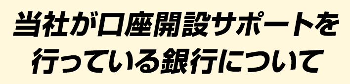
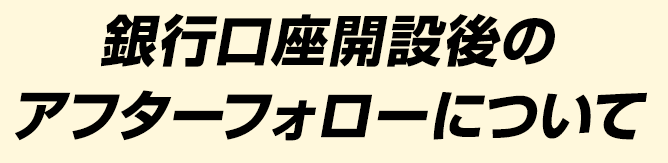

当社が郵送で口座開設サポート可能な銀行は、
キルギスタンコマーシャル銀行です。
お一人様一口座開設することができます。
最低預金額は10,000USD(約120万円)以上からとなります。
当社が口座開設サポートを行っている銀行の特徴
| Kyrgyzstan Commercial Bank キルギスタン・ コマーシャル銀行 http://www.cbk.kg/en |
|||
|---|---|---|---|
| 銀行情報 | 貴金属の取引業務も 行える銀行 ▶銀行の詳しい内容はこちら◀ |
||
| 米ドル 定期預金利息 |
|
||
| キルギスソム 定期預金利息 |
|
||
| キルギス共和国内 高収益銀行ランキング 2013年度(24行中) キルギス中央銀行発表 |
(収益高 90,940,000ソム) |
||
| swiftコード | KYRSKG22 | ||
| swift銀行名 | Bank Kyrgyzstan JSC | ||
| インターネットバンキング | (初期パスワードの 有効期限は3日間です) |
||
| VISAデビットカード | 口座開設と同時発行 | ||
| 定期預金満期後 | 継続運用も可 |
※ホームページ上の説明とその他の記載は、すべて2016年3月25日時点の情報に基づくものです。
クリックすると別ウィンドウで表示されます。

当社では、お客様の海外口座の運用サポートをするサービスを提供しています。
| サービス内容 | 通常料金(税別) |
|---|---|
| 海外最新情報メール配信 | 無料 |
| 日本語インターネット バンキングマニュアル |
3,000円/1銀行 |
| 銀行口座に関するご質問(メール)、口座利用サポート（定期預金更新、海外送金） | 3,000円/1回（問） |
| VISAデビットカード等 紛失時の対応(メール) |
20,000円＋実費 |
| VISAデビットカード等紛失時の 緊急対応(電話) |
50,000円＋実費 |
| 当社が開催・共催するセミナー | 実費 |
| 当社が主催する海外視察ツアー | 実費 |
| 面談で各種コンサルティング2時間 | 100,000円/1回 |
注意事項
キルギス口座開設のお申込みにあたっては、以下の内容をご確認ください。
・口座開設はお一人さま１銀行1口座とします。
・お申込みは、満20歳以上60歳未満の方で、パスポートをお持ちの方に限ります。
・反社会的勢力にある方(暴力団、暴力団関係企業、総会屋若しくはこれらに準ずる者又はその構成員をいいます。以下当社WEBサイト等において同じ。)、過去に公序良俗に反する行為を行った方又は破産手続開始の申立て及びこれに準ずる行為を行った方並びにこれらに準じる者と当社が認める方は本サービスをご利用できません。
・マネーロンダリング及びテロ資金供与等の資金浄化、及び脱税を目的としているものと当社が判断する場合、口座開設のサービス提供をお断りさせていただきます。
・上記該当する場合および業務の妨げとなる頻回のお問い合わせ等、当社が不適切と判断した場合のお申込みはお断りさせていただくことがございます。その際、手数料から実費を差し引いた金額をご返金いたします。
・当サイト上でお申込みの手数料決済後、１ヶ月以内に口座開設の必要書類のご返送がない場合、サポートを終了致します。返金はございません。
・書類不備の場合、送料は２回目のご返送分からお客様負担となります。
・口座開設日から2週間以内にお客様にて正確に送金手続きをされなかった結果、口座開設日から1か月以内に銀行への着金がなかった場合、口座開設サポートを終了させていただきます。返金はございません。
・お申込みには、当社の各種取引規定等へ同意していただく必要がございます。
・確実に口座開設ができると約束するものではございません。
・口座開設後は各自でご対応いただく必要があり、インターネット環境に接続できるパソコンや携帯電話をお持ちでない場合はお取引やお手続きができないことがございます。
・外貨預金取引のリスクはこちらをご覧ください。
・当社の利用規約並びに個人情報取扱規程はこちらをご覧ください。
・だるま倶楽部は必須ではありませんが、ロシア語でのやり取りができない方は加入をお勧めします。